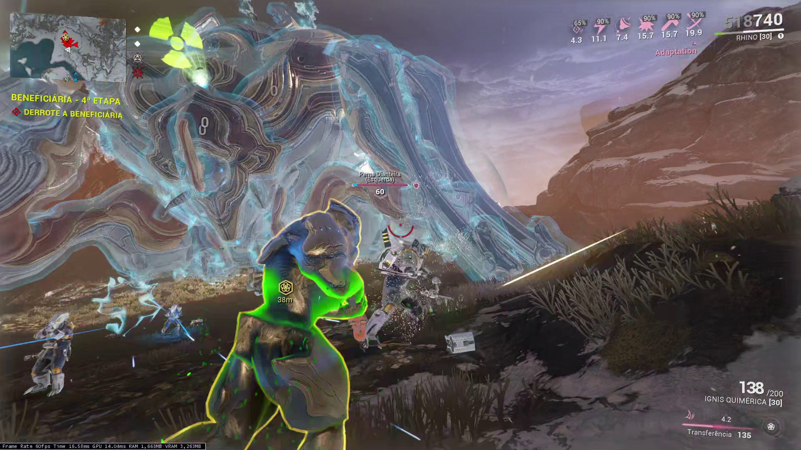
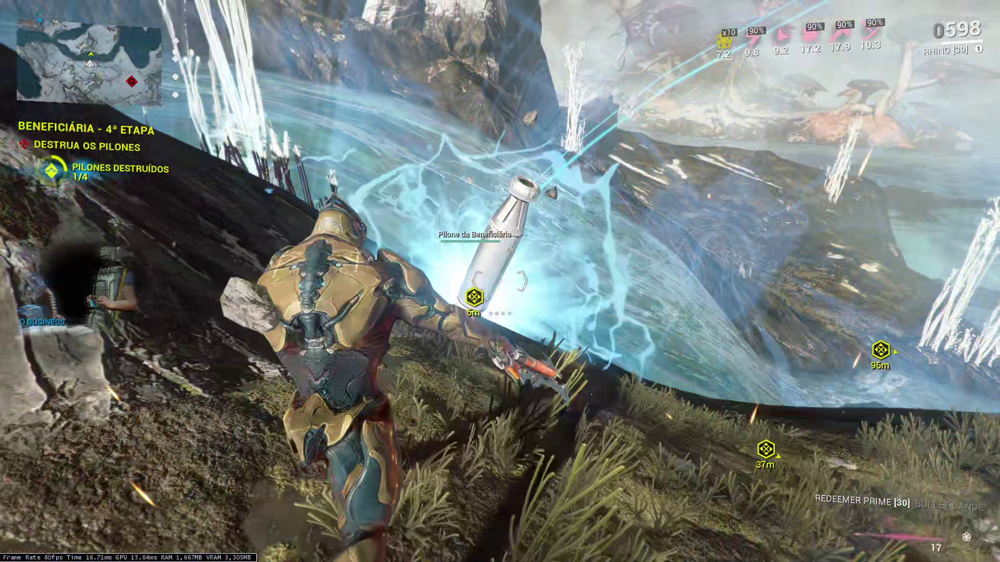

Como funciona?
Informações sobre conceitos e mecânicas do combate contra a Beneficiária em Orb Vallis.
Etapas
O combate contra a Beneficiária segue uma sequência pré-definida de etapas. A ordem é:
- Remover o escudo.
- Destruir as quatro pernas.
- Atacar o corpo.
- Destruir os quatro pilones.
- Destruir as pernas novamente.
- Atacar o corpo.
- Remover o escudo novamente.
- Destruir as pernas.
- Atacar o corpo.
- Destruir os seis pilones.
- Remover o escudo novamente.
- Destruir as pernas.
- Atacar o corpo.
Escudo Adaptativo
A Beneficiária começa protegida por um escudo adaptativo. Acima da cabeça da Beneficiária será exibido o tipo de dano atualmente capaz de causar dano ao escudo. A Beneficiária irá alternar entre diferentes tipos de dano durante a luta.

O tipo de dano muda automaticamente após determinado tempo ou após receber uma quantidade suficiente de dano do tipo atual. Além disso, é possível forçar uma mudança de fraqueza utilizando dano da Amp do Operador. Esta mecânica de forçar a mudança do elemento tem um tempo de recarga de 5 segundos.
Fases das pernas
Depois que o escudo é destruído, a Beneficiária se torna vulnerável. Neste momento, sua Archgun equipada com Gravimag deve ser utilizada para destruir suas pernas.
Depois de destruir as quatro pernas, a Beneficiária cai no chão e seu corpo fica vulnerável. Utilize a Archgun para causar dano ao corpo.
Quando a vida chegar ao limite da fase atual, a Beneficiária se recuperará e iniciará uma nova mecânica.
Pilones
Durante a luta, a Beneficiária irá recuperar seu escudo e ficar invulnerável. Ela lançará Pilones ao redor da arena, que precisam ser destruídas para que o combate possa continuar.

A primeira vez serão criadas 4 Pilones, e na segunda vez serão criadas 6 Pilones.
As Pilones possuem uma barreira que bloqueia disparos, mas é possível atravessar fisicamente essa barreira.
Autodestruição
Depois de derrotada, a Profit-Taker inicia uma sequência de autodestruição. Pegue as recompensas e afaste-se imediatamente.
A explosão possui um alcance de aproximadamente 300 metros e pode matar o jogador e destruir as recompensas deixadas no chão.